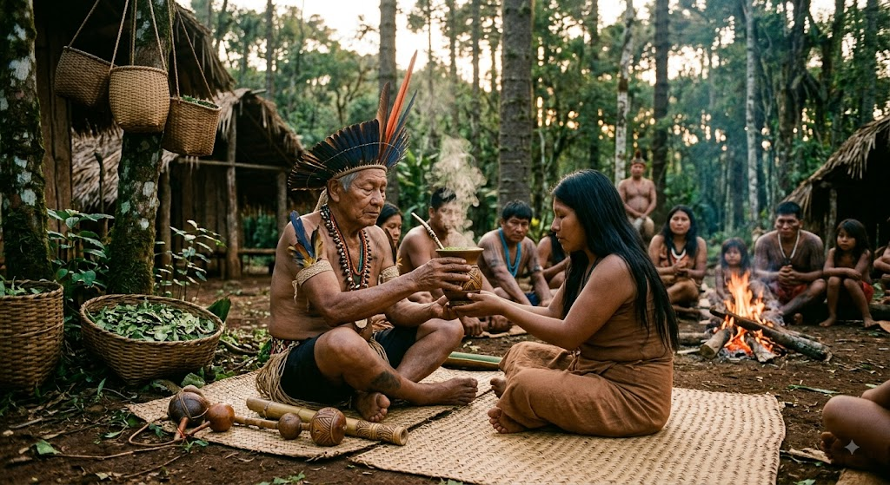

Origem Indigena do Consumo
Segundo as tradições orais, o consumo da erva-mate remonta a séculos antes do contato com os colonizadores europeus. Mito Guarani do Ca'a: A lenda conta que a divindade Tupã recompôs as forças de um velho guerreiro indígena cansado e cedeu a sua filha uma planta de folhas verdes brilhantes (Ca'a). A planta traria vigor, saúde e amizade para toda a comunidade. Uso medicinal e diário: Os indígenas mastigavam as folhas secas para combater o cansaço durante longas caminhadas, usavam infusões em água fria (tereré) ou água quente (chimarrão) para aliviar dores e como digestivo.
Saberes Tradicionais e Tecnologias Indigenas
Todo o processo de transformação da folha fresca e amarga em uma bebida saborosa e duradoura é fruto da tecnologia indígena: Sapeco: Passagem rápida das ramagens sobre chamas abertas para interromper a oxidação e preservar a cor verde e os nutrientes. Carijo / Cancheamento: Estrutura de madeira acima do fogo para secagem lenta das folhas através da fumaça e do calor residual, seguida da trituração manual. Utensílios Naturais: A cuia (porongo ou cabaça seca) e a bomba original (um taquara perfurada) foram invenções cem por cento indígenas que permanecem em uso até hoje.
Importância Cultural e Espiritual
Rito de Comensalidade: O ato de circular a cuia em roda simboliza a igualdade, o diálogo e o fortalecimento das alianças sociais dentro da aldeia. Elemento Sagrado: A erva-mate integrava rituais de cura conduzidos pelos Xamãs/Pajés (Paié ou Nhanderu), atuando como ponte entre o mundo físico e o espiritual.

Curiosidades
Curiosidade 1
A influência indígena no consumo contemporâneo é profunda e se manifesta no nosso cotidiano sem que muitas vezes percebamos. Na alimentação, a domesticação de espécies vegetais pelos povos originários transformou radicalmente a gastronomia mundial. O milho, desenvolvido na Mesoamérica a partir do teosinto por meio de seleção genética empírica, assim como as dezenas de variedades de batatas cultivadas nos Andes e o cacau transformado em bebida cerimonial pelos maias e astecas, tornaram-se pilares do comércio global de alimentos. Da mesma forma, o processamento da mandioca-brava na Amazônia exigiu o desenvolvimento de uma tecnologia específica para extrair o cianeto presente na planta, viabilizando o consumo seguro de farinhas, tapioca e tucupi, itens que hoje movimentam grande parte da indústria alimentícia local e exportadora.
Curiosidade 2
Além da culinária, diversos produtos de uso pessoal e hospitalar nasceram do conhecimento e da engenharia dos povos nativos das Américas. A extração e manipulação do látex da seringueira para a criação de objetos impermeáveis e bolas elásticas abriu caminho para a futura indústria da borracha e dos pneumáticos. Na medicina, a utilização da casca da chinchona para combater febres levou ao isolamento do quinino, essencial no tratamento da malária, enquanto o uso do salgueiro deu origem ao ácido acetilsalicílico, a famosa aspirina. Até mesmo utensílios como as redes de descanso, desenvolvidas para proteger o corpo da umidade e dos insetos no solo tropical, e as primeiras formas de proteção ocular contra a radiação solar, criadas pelos Inuit utilizando fendas esculpidas em osso ou madeira para evitar a cegueira provocada pelo reflexo da neve, demonstram como a utilidade, o conforto e a sobrevivência projetados pelas culturas originárias fundaram muitos dos hábitos e objetos de consumo que utilizamos até hoje.